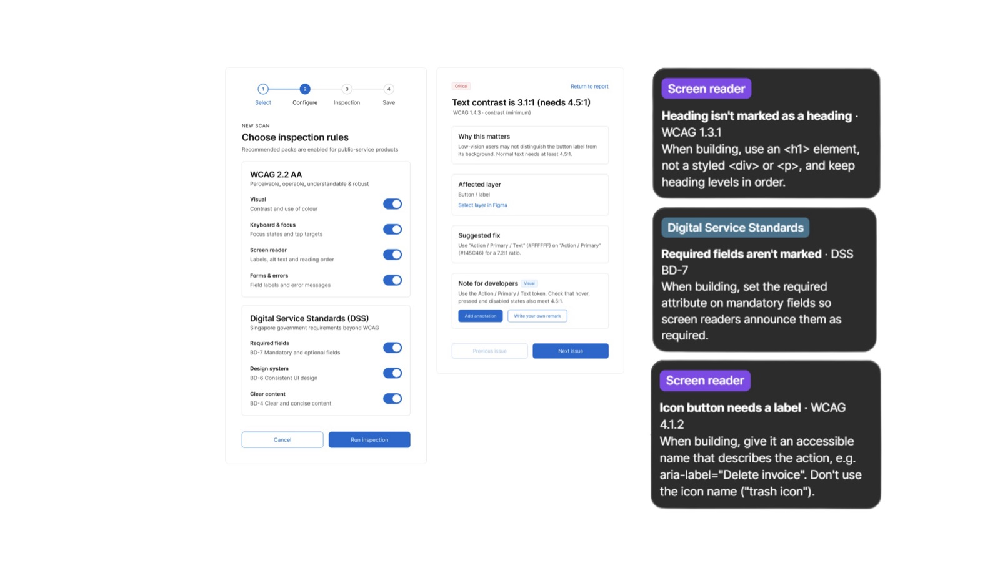
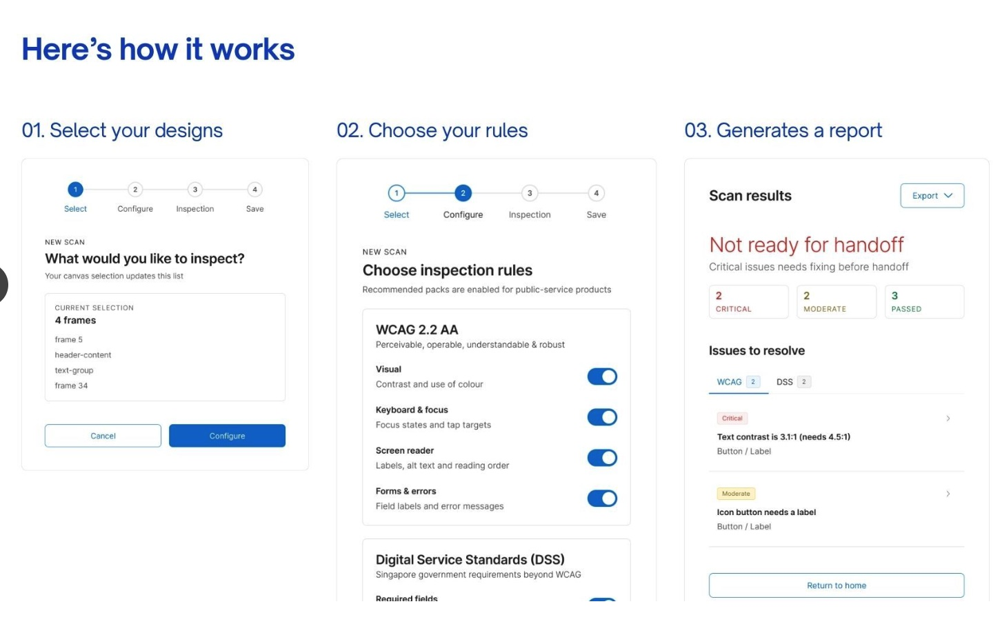
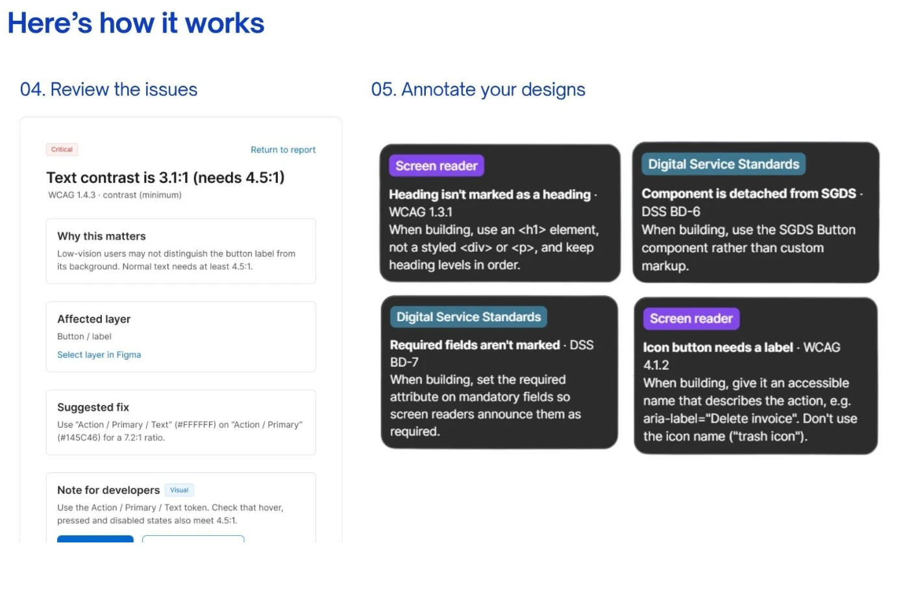

The problem
Accessibility gets fixed after the fact
Government digital services in Singapore are built on shared design systems. When a core component leaves out something a screen reader user or a keyboard user needs, every team that uses it inherits the gap, and each one ends up solving it on its own.
Design systems spread accessibility barriers at scale when cross-disability patterns aren't built into their core components.
Today's workflow
- Design system designers create or update components
- Engineers code the design system
- Product designers build screens but can't tell if they're accessible
- They report the problems back
- Design system designers fix the components, and the cycle starts again
↻ Every fix happens after something has already shipped.
Research
Designers care. Their tools don't help.
We read through WCAG, the Digital Service Standards and GovTech's Oobee scanner, interviewed 4 design system designers at GovTech, and surveyed 10 more designers across the organisation.
- Guidelines say what, not how. WCAG and DSS set requirements but don't show what an accessible component looks like day to day.
- Design systems leave edge cases open. Designers often had to look things up or ask a developer when the system didn't cover a case.
- People want patterns, not checklists. They asked for interaction patterns and component rules far more than a list to tick off.
Most useful accessibility guidance in a design system · share of answers
The solution
Check it in Figma, before handoff
POUR is named after WCAG's four principles: Perceivable, Operable, Understandable and Robust. It lives where designers already work and checks screens and components in five steps.


The annotations are written for the person who builds the screen, so the intent survives handoff:
Heading isn't marked as a heading. Use an <h1>, not a styled <div>, and keep heading levels in order.
Icon button needs a label. Give it a name that describes the action, like aria-label="Delete invoice", not "trash icon".
Required fields aren't marked. Set the required attribute so screen readers announce it.
With POUR
- Design system designers build components and scan them with POUR
- Accessibility rules and developer notes are saved into each component
- Product designers inherit them and scan their screens before handoff
→ Fixed once, upstream, for every team that uses the component.
Build
A working plugin, not a mockup
Our team built POUR as a real Figma plugin in plain JavaScript, with its interface made from SGDS web components, so a tool for the government's design system is built with that system too. It also runs in a mock Figma workspace in the browser, so anyone can try it without installing anything.
- 11 checks across WCAG 2.2 AA and DSS, each linked to its guideline
- Text contrast is calculated from the layer's real fill colours, not guessed from names
- Reads designers' existing notes, so an image already annotated with alt text passes
- Writes real Figma Dev Mode annotations, and exports reports as CSV
- On the sample permit form, the "before" version fails with 13 issues; the fixed version passes all 11 checks
What I did
- Worked on the research: interviews with GovTech design system designers and the designer survey
- Contributed to the plugin code, including a fix for adding notes to layers that already had one. Figma returns two label fields when it reads an annotation but accepts only one when it writes, so the plugin now keeps just one.
- Pitched POUR to GovTech at the showcase
Outcome
Pitched to GovTech
We presented POUR at the challenge showcase on 23 September 2026, where mentors and agency representatives visited our booth. Next, we'd like to scan whole user flows for things like focus order, sync component rules into the coded design system, and give GovTech a dashboard of accessibility health across agencies.